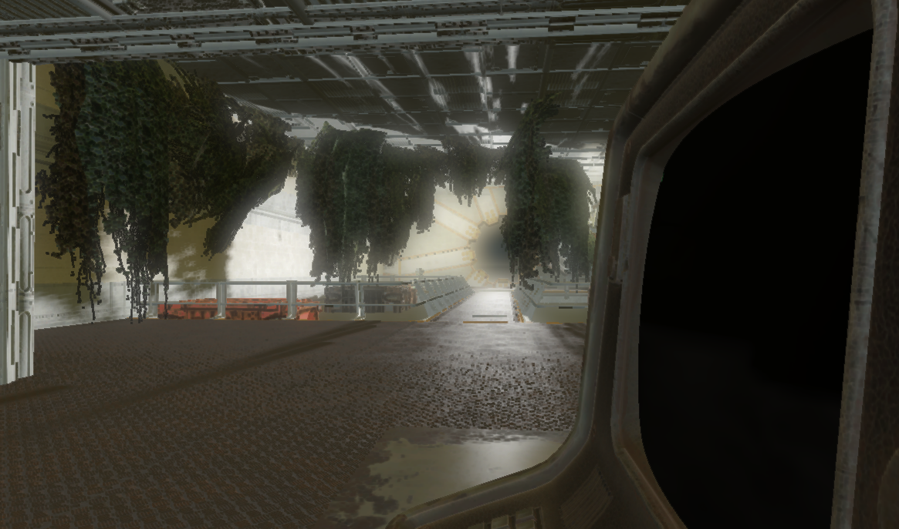
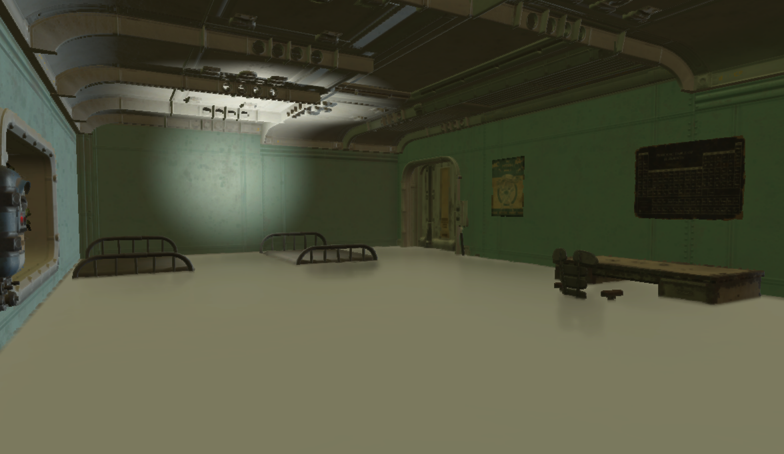
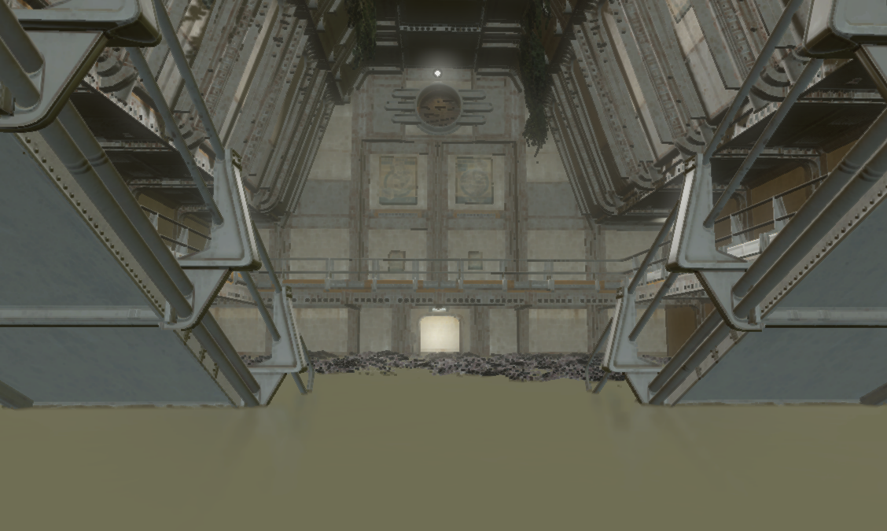
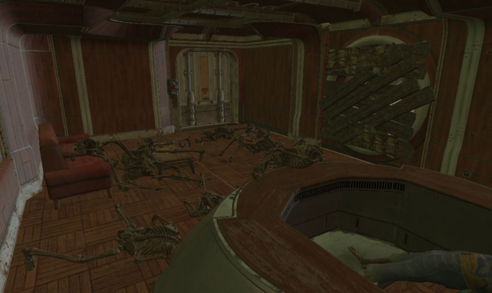
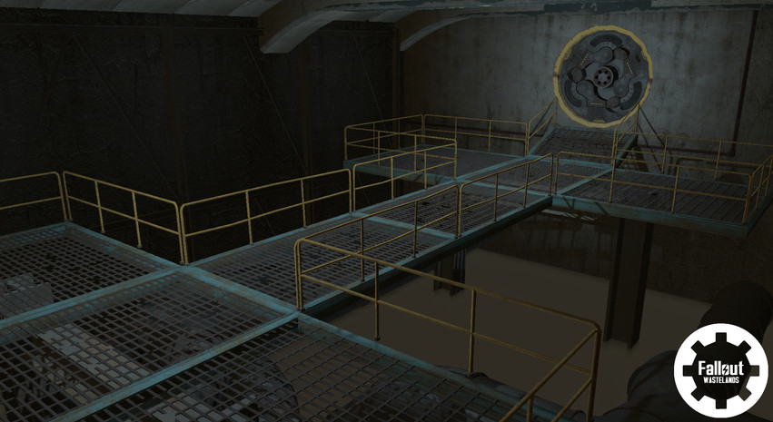

Fallout: Wastelands
A large-scale Fallout mod initiative to build multiple new wastelands that would converge into a single overarching storyline.
Project Overview
Note: Fallout: Wastelands is no longer in development. My co-lead, other team members and I are now working on our own new games and mods. You can follow the spiritual successor at our game studio, Olympus Game Studios, at olympusgames.dev.
Fallout: Wastelands began as a smaller project called Fallout: Boardwalk, a DLC-sized mod that brought the Atlantic City wasteland to life. Over time, it grew into the much larger undertaking that became Fallout: Wastelands.
A lot of our passion for Boardwalk was crushed when Bethesda brought Atlantic City to Fallout 76 with close similarities. Rather than compete directly, we decided we wanted to keep playing and creating new content and it didn't all have to be massive, Far Harbor–sized DLCs. The bigger idea was to run multiple projects at once that would eventually converge into one large storyline, with the Sole Survivor taking on a saviour-of-the-wasteland arc much like a typical Fallout game.
The project pushed my skills further than anything before it. This was the first time I led level design: I wasn't only building the levels players would see, the ones that needed to look 110% professional and fit the Fallout universe. I also had to teach, guide and manage the other level designers on the team. I learned to be the bridge between writers, concept artists and project leads on one side and the level design team on the other, making sure everyone was aligned and working toward the same goal.
Development Approach
Technical Foundation
Built with Bethesda's Creation Kit, Papyrus scripting and 3D assets created in Blender. Level design and narrative integration were central: levels are the first thing players see, so they needed to be visually compelling, feel at home in the Fallout universe and still carry their own identity.
Design Challenges
A goal I kept coming back to was bringing visual ideas to Fallout that hadn't been explored much before. Vaults in particular needed to feel like more than bunkers tucked behind someone's backyard. They had to feel designed to house thousands of people as a self-sustaining community, even when the experiment said otherwise.
One concrete example was the gear-door room. I wanted it to read clearly as a main entrance: a space built around a massive vault door, where storage containers and other critical supplies would live. This wasn't a hallway you rushed through. It was the big storage room meant to hold centuries' worth of provisions, with containers heavy and awkward enough that hauling them deeper into the vault would be a struggle. In practice, the gear-door room became almost a second hub for the vault, not a social center for residents, but the entrance and staging area that everything else flowed through.
Project Gallery










